OscilloGen
Projet Microcontrôleur : Développer un micrologiciel en C/C++ et d’une interface graphique en C# pour la conception d’un Oscilloscope doté de fonctionnalités de Générateur de Fonctions, basé sur une carte STM32 qui peut être contrôlé par son interface.
- Utiliser des interfaces microcontrôleurs tels que GPIO, DMA, Timers et interruptions.
- Acquérir et générer de signaux via ADC/DAC embarqués ou FPGA externe.
- Implémenter des protocoles SPI, I2C, USART/UART, et USB pour la communication externe.
- Accélérer des calculs trigonométriques à l’aide de CORDIC et de la librairie CMSIS-DSP.
- Implémenter du watchdog indépendant (IWDG) pour prévenir les blocages logiciels.
- Implémenter une architecture logicielle modulaire en C++ orienté objet, avec abstraction du matériel.
- Programmer en bare-metal via écriture directe dans les registres du microcontrôleur.
- Optimiser le traitement par des fonctions critiques écrites en Assembleur ARM.
- Développer une interface utilisateur en C# avec Windows Forms et avec un design moderne.
- Implémenter une interface pour l’oscilloscope, le générateur de fonction et la mise à jour du micrologiciel.
- Implémenter une architecture modulaire de l’application PC avec multiples pages WinForms.
- Implémenter de tests unitaires avec GoogleTest (C++) et NUnit (C#).
- Utiliser des outils: STM32CubeIDE, Visual Studio Code, Git, CMake, GNU Toolchain.
 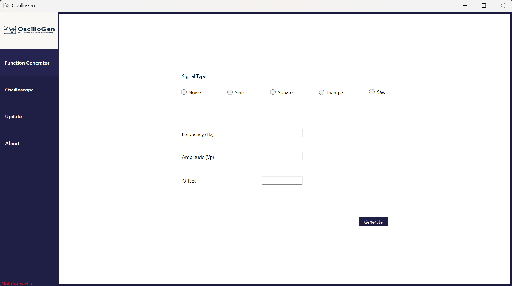
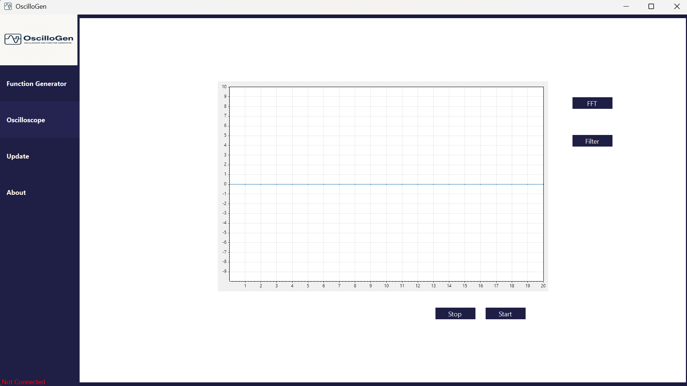
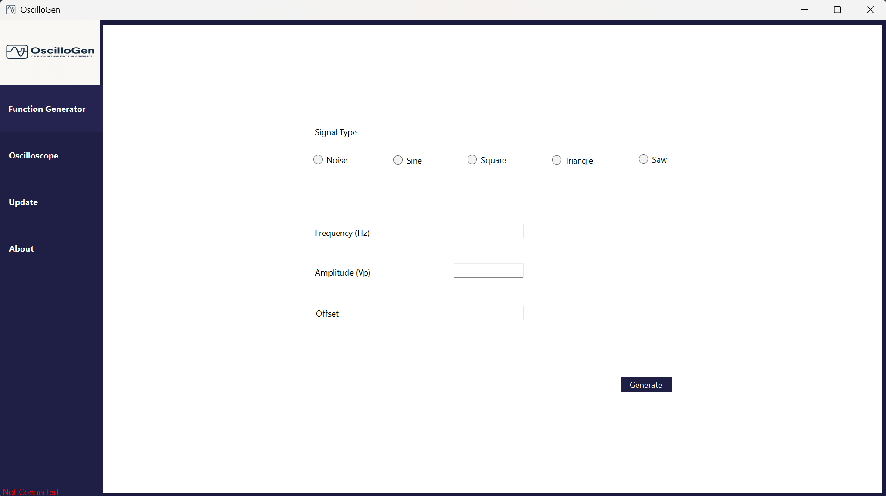
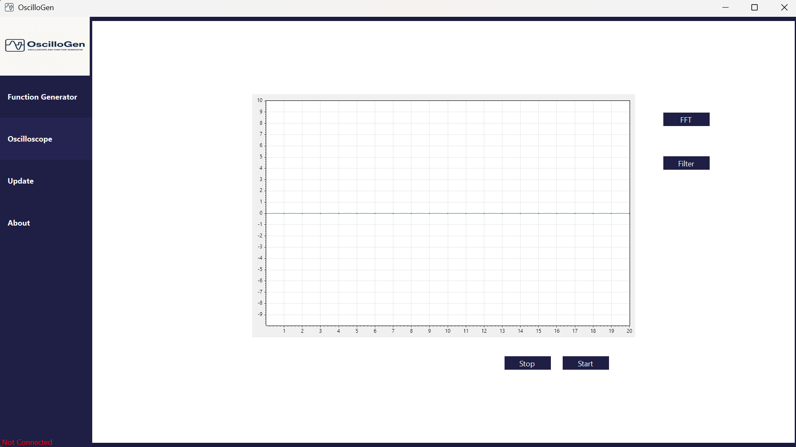


Drone UAV
Projet Embarqué C++: Développer du logiciel embarqué d’un drone (UAV) en C++ moderne, intégrant des concepts avancés d’architecture logicielle, temps réel, communication et supervision à distance.
- Concevoir d’une architecture logicielle modulaire en C++ avec programmation orientée objet avancée.
- Implémenter un système temps réel avec exécution asynchrone et multithreadée.
- Implémenter la communication distante avec le drone via un protocole client-serveur basé sur TCP/IP.
- Implémenter des modèles de communication inter-threads : Observer, Message Queue, Singleton.
- Utiliser un accès direct au matériel via les interfaces systèmes Linux : I2C, PWM, UART, fichiers.
- Acquérir et traiter de données multi-capteurs (altitude, vitesse, orientation, batterie).
- Générer des fichiers de compilation avec CMake, Make et la GNU Toolchain.
- Écrire et exécuter de tests unitaires avec Google Test.


Avion F25
Projet Aérospatial C++: Concevoir un système avionique embarqué reliant les commandes du pilote au calculateur de vol, en utilisant le langage C++ et des protocoles de communication avioniques, afin de permettre un contrôle fiable de l’appareil.
- Générer des fichiers de compilation avec CMake, Make et la GNU Toolchain.
- Documenter le code source avec Doxygen et effectuer la gestion de version sur Git.
- Développer une interface Web en HTML pour l’entrée de commandes en temps réel.
- Application de méthodes thread-safe pour assurer la synchronisation entre les threads.
- Implémenter du multithreading en C++ pour paralléliser les processus de modules (ARINC 653).
- Utiliser des protocoles de communication ARINC 429 et AFDX pour la transmission entre les modules.
- Afficher dynamiquement des paramètres de vol (angle d’attaque, vitesse, altitude) à destination du pilote.
Agent de jeu en Intelligence Artificiel
Project IA : Concevoir un agent intelligent pour un jeu de société en Python, basé sur l’algorithme Minimax, avec élagage alpha-bêta, heuristiques personnalisées et optimisation des ressources. L’objectif était d’affronter des joueurs humains et d’autres agents IA dans un contexte compétitif.
- Implémenter des algorithmes d’IA tel que Minimax avec élagage alpha-bêta de type A et B.
- Développer des heuristiques pour améliorer la performance stratégique et la gestion des points.
- Collaborer en binôme avec gestion de version via Git pour un développement structuré et collaboratif.
- Utiliser des fonctionnalités avancées Python : programmation orientée objet, collections, compréhensions.
- Appliquer des techniques d’optimisation pour réduire la consommation de ressources et accélérer la réponse.
Système d’automobile
Projet Embarqué Java : Développer un logiciel embarqué en Java pour le pilotage et la supervision d’un véhicule moderne, intégrant des concepts avancés d’architecture logicielle, de traitement temps réel et de gestion de données embarquées.
- Concevoir une architecture modulaire avec des modules fonctionnels indépendants.
- Implémenter un système temps réel avec programmation multithreadée pour garantir la réactivité.
- Intégrer une base de données SQL via JDBC pour gérer l’historique de maintenance du véhicule.
- Implémenter la gestion avancée des fichiers (File I/O) pour l’acquisition et la liaison avec les capteurs.
- Mettre en place un mécanisme robuste de gestion des exceptions pour assurer la fiabilité du système.
- Implémenter des appels API pour la position GPS et l’analyse des données JSON avec un JSON Parser.
- Utiliser des collections Java pour manipuler efficacement les structures de données complexes.
- Implémenter un modèle client-serveur (TCP/IP) pour les fonctionnalités télématiques.

Réseau Neurone sur FPGA
Projet C++/Scala : Développer un réseau de neurones multicouches pour la classification de chiffres manuscrits à l’aide du jeu de données MNIST. L’implémentation s’effectue à la fois en C++ HLS (générant du VHDL) et en Scala Chisel (générant du Verilog) pour une exécution sur FPGA (PYNQ).
- Utiliser les outils Vitis HLS et Xilinx Vivado avec une carte FPGA dotée d’un ASIC intégré.
- Écrire du code en Scala Chisel pour générer du Verilog destiné à une synthèse matérielle.
- Réaliser une analyse des performances et de l’utilisation des ressources entre les deux implémentations.
- Développer du code C/C++ HLS optimisé, converti ensuite en VHDL pour une implémentation matérielle.
- Concevoir des IP personnalisés avec Vivado et assurer la communication avec l’ASIC via le protocole DMA.
- Effectuer une première validation de l’algorithme en Python et C++ sur un processeur sous forme logiciel.
- Appliquer des concepts d’intelligence artificielle, notamment les réseaux de neurones multicouches (MLP).
- Implémenter le réseau neuronal sur FPGA et valider les résultats à l’aide d’un Notebook Jupyter en Python.


Reconnaissance faciale en compilation croisée sur Linux
Projet compilation croisée C++ : Développer un programme de reconnaissance faciale via la compilation croisée entre un ordinateur d'architecture x86 et un microcontrôleur d'architecture ARM sous Linux, en utilisant le langage C++ sur l'IDE VS Code. L'objectif est de reconnaître un visage parmi d'autres.
- Documenter le code avec Doxygen et sauvegarder sur Git/Bitbucket.
- Générer de fichiers de compilation avec CMake, make et GNU Toolchaine.
- Utiliser des mécanismes fork-exec pour l'exécution en parallèle des programmes.
- Appliquer des protocoles de TCP/IP Sockets pour la compilation croisée sur Linux.
- Utiliser la ligne de commande Linux (Bash et Tcsh) et mise en œuvre de la gestion des périphériques Linux.
Jeu vidéo F1 sur microcontrôleur ARM
Projet Microcontrôleur : Améliorer le jeu vidéo T-Rex en intégrant les concepts de microcontrôleur, l'architecture ARM et la programmation Assembleur pour rendre le jeu multijoueur avec un capteur IR et d'un capteur ultrasonique.
- Créer une vidéo publicitaire présentant le produit.
- Appliquer des protocoles de communication série (UART, SPI, I2C).
- Collaborer au sein d'une équipe de trois personnes pour la conception du jeu vidéo.
- Écrire de Tests Unitaires à l'aide de Unity pour vérifier le fonctionnement du programme.
- Utiliser des microcontrôleurs avec les langages informatiques C et assembleur ARM sur Keil uVision5.
- Appliquer des connaissances en microcontrôleur avec STM32Cube et transfert de données (DMA, DAC, ADC).
- Configurer les différents périphériques sur STM32CubeMX, tels que les GPIO, les Timers et les Interruptions.

Librairie graphique Qt Creator
Projet POO GUI en C++ : Développer une librairie avec interface graphique (GUI) en mettant en œuvre les principes de programmation orienté objet C++, la gestion des exceptions et Qt Creator afin de facilement classifier les différents Pokémon selon leur statistique.
- Utiliser de Visual Studio et Qt Creator.
- Collaborer au sein d'une équipe de deux personnes.
- Mettre en œuvre les principes du patron modèle-vue-contrôleur sur Qt Creator et POO sur C++.
- Écrire de Tests Unitaires à l'aide de Google Test pour vérifier les classes et les fonctions du programme.
- Utiliser les concepts d’encapsulation, d’héritage, polymorphisme, abstraction et des modèles (Templates).
- Utiliser les concepts Surcharge des opérateurs, Gestion des Exceptions et STL (Standard Template Library).

Solveur Max-Cut sur FPGA
Projet C++ HLS : Résoudre le problème d’optimisation NP-difficile Max-Cut sur un FPGA en utilisant l’algorithme du recuit simulé via l’outil HLS en C++. Une attention particulière est portée à l’écriture d’un code C++ optimisé afin de générer efficacement du code VHDL pour une implémentation matérielle sur FPGA (PYNQ).
- Valider des résultats sur FPGA via un Notebook Jupyter en Python.
- Utiliser les outils Vitis HLS et Xilinx Vivado avec une carte FPGA intégrant un ASIC.
- Vérifier l’algorithme initial en Python et C++ sur un processeur (CPU) sous forme logiciel.
- Appliquer des techniques d’optimisation issues de l’intelligence artificielle, comme le recuit simulé.
- Développer un code C/C++ optimisé, convertible en VHDL pour une implémentation en portes logiques.
- Analyser en profondeur les différences de performance et les ressources utilisées entre les implémentations.
- Implémenter des IP personnalisés avec Vivado et assurer la communication avec l’ASIC via le protocole DMA.

Jeu Mastermind sur FPGA
Projet VHDL : Créer une version électronique du jeu Mastermind sur une carte FPGA en utilisant le langage matériel VHDL avec l'environnement VIVADO Xilinx, et en implémentant le jeu sur la plateforme de développement Nexys Video de Digilent (Artix-7).
- Collaborer au sein d'une équipe de deux personnes pour la conception du jeu.
- Gérer l'initialisation et de la mise hors tension d'un écran OLED et utiliser de mémoires ROM et RAM.
- Procéder par les étapes de développement VHDL (Analyse RTL, Synthèse, Implémentation, Simulation).
- Vérifier les codes VHDL en écrivant des bancs de test et implémenter des IP et utiliser analyseur logique.
- Implémenter des machines à états finis (MSA), de circuits antirebonds, synchroniseurs et diviseur d’horloge.
Processeur CPU RISC-V
Projet circuit intégré : Concevoir un processeur RISC-V à cinq étages de pipelines en utilisant VHDL sur Active-HDL et créer des dessins de masques pour placement des routages. Le processeur est réalisé pour exécuter des commandes en langage assemblé RISC-V.
- Collaborer au sein d'une équipe de deux personnes.
- Créer des dessins de masques sur Virtuoso de Cadence.
- Vérifier et simuler les codes VHDL en écrivant des bancs de test.
- Utiliser un fichier package et regrouper les signaux pour assurer la propreté du code.
- Implémenter de la pipeline Fetch, Decode, Execute, Memory, Write Back avec ALU, Adder, Shift_Register, etc.


Portefeuille d’actions et d'investissements
Projet API en C# : Développer un programme de portefeuille d'investissement utilisant le langage C# avec Visual Studio et .NET. Ce programme permet à un utilisateur de suivre les actions d'une entreprise, de s'authentifier pour acheter ou vendre des actions, ou de vérifier les informations sur une entreprise avec son API personnel.
- Utiliser de REST API et lire dans un fichier JSON.
- Appliquer des concepts de programmation orientée objet et de C#.
- Utiliser des API personnalisées et publiques pour vérifier l'état des actions des entreprises.
- Rendre le programme modulaire en utilisant des classes et des méthodes sur différents fichiers.
- Respecter l'encapsulation en définissant des classes publiques et privées pour assurer la sécurité du système.
Gestion des finances personnelles
Projet Data Base en Python : Développer un programme de suivi de l’argent utilisant le langage Python avec programmation orientée objet (OOP) et SQL. Le programme permet de saisir et d'enregistrer les dépenses et le budget personnel sur une période donnée, soit dans un fichier CSV soit dans une base de données SQL, selon les préférences de l'utilisateur.
- Utiliser les concepts Gestion des Exceptions pour garantir la fluidité du programme.
- Appliquer les concepts du langage Python et les principes de la programmation orientée objet.
- Rendre le programme modulaire en utilisant des classes et des définitions sur différents fichiers.
- Effectuer des opérations de lecture et d'écriture sur une base de données SQL et sur des fichiers CSV
- Utiliser les environnements de développement VS Code et PyCharm et documenter le code avec Doxygen.
Générateur de Courriel
Projet en Java : Développer un programme permettant de gérer les adresses courriels utilisant le langage Java sur VS Code. Ce programme permet à une entreprise de générer des courriels pour ces employées selon leurs emplois dans l’entreprise et à l’employeur de le personnaliser.
- Encapsuler les informations sensibles et les opérations de gestion.
- Générer de mots de passe robustes et sécurisés à l'aide de SecureRandom.
- Utiliser des techniques de manipulation de chaînes pour générer des adresses électroniques.
- Documenter le projet à l'aide de commentaires Doxygen afin d'améliorer la lisibilité et la maintenabilité.

Serrure intelligente avec transfert de puissance à distance
Projet Intégrateur 3 : Concevoir une serrure intelligente alimentée à distance en utilisant un microcontrôleur (C) et un circuit d’induction d’électromagnétique qui permet d'ouvrir la serrure à l'aide d’un téléphone portable et RFID, tout en alimentant le dispositif sans aucun contact physique.
- Effectuer des recherches et documentations du projet de manière autonome.
- Vérifier le projet et l’avancement du projet sous la supervision d'un ingénieur électrique.
- Créer des diagrammes schématiques du circuit et concevoir le projet de manière autonome.
- Rédiger un rapport technique d'ingénierie et présenter le prototype de façon professionnelle.
- Respecter les étapes de conception d’un projet d’ingénierie et les échéanciers pour chaque étape du projet.


Street Warfare (Jeu de tir à la troisième personne)
Projet Jeu Vidéo: Concevoir un jeu vidéo multijoueur 6v6 en vue troisième personne sur Unreal Engine 5, jouable en ligne ou contre une intelligence artificielle, mettant en œuvre des mécaniques de tir tactique et un environnement immersif.
- Créer une carte de jeu avec des éléments interactifs et un level design optimisé.
- Développer un menu interactif offrant diverses options de jeu.
- Intégrer des personnages réalistes via MetaHuman.
- Importer et synchroniser des animations avec effets sonores intégrés.
- Intégrer des modèles 3D (meshes) de personnages, armes et décors.
- Implémenter des logiques de gameplay à l’aide des Blueprints et du C++ sous Unreal Engine.
- Effectuer des itérations successives du gameplay en fonction des retours de sessions de playtests.
Audit de sécurité et de test d’intrusion
Cybersécurité : Réaliser un audit de sécurité dans un environnement simulé en utilisant Kali Linux et divers outils de test d’intrusion. Le projet inclut l’identification de vulnérabilités critiques, l’exploitation éthique de failles pour démontrer l’élévation de privilèges, ainsi que la formulation de recommandations concrètes pour renforcer la sécurité du système.
- Obtenir un accès administrateur par élévation de privilèges.
- Mener un audit de sécurité complet dans un environnement contrôlé et isolé.
- Utiliser Kali Linux sur une machine virtuelle avec des serveurs déployés via Docker.
- Rédiger des recommandations techniques pour remédier aux vulnérabilités identifiées.
- Détecter des failles critiques et les exploiter de manière éthique à des fins de démonstration.
- Identifier des adresses IP, scanner les ports et analyser les services à l’aide de Netdiscover et Nmap.
- Exploiter des vulnérabilités et déchiffrer des mots de passe hachés à l’aide de Metasploit et Hashcat.
- Détecter des répertoires cachés et identifier des failles dans un site WordPress avec DirBuster et WPScan.
Jeu vidéo de Tic-Tac-Toe
Projet GUI en Python: Développer le jeu Tic-Tac-Toe, joué par deux personnes, en utilisant le langage Python avec PyQt Designer sur MS Windows. L'objectif est d'utiliser Python avec une interface graphique pour déterminer le gagnant du jeu.
- Documenter le code avec Doxygen.
- Utiliser les environnements de développement VS Code.
- Écrire un programme modulaire en utilisant des définitions.
- Utiliser des fonctionnalités du PyQt Designer et appliquer les notions de design d'interface graphique.

Navigateur web Qt
Projet personnel en Python avec PyQt5 : Améliorer un navigateur web en utilisant Python et PyQt5 sur Visual Studio pour permettre une navigation sur Internet sans l'utilisation d'une interface graphique (GUI).
- Utiliser des fonctionnalités de PyQt5.
- Appliquer des concepts du langage Python.
- Ajouter de personnalisation au navigateur web.
 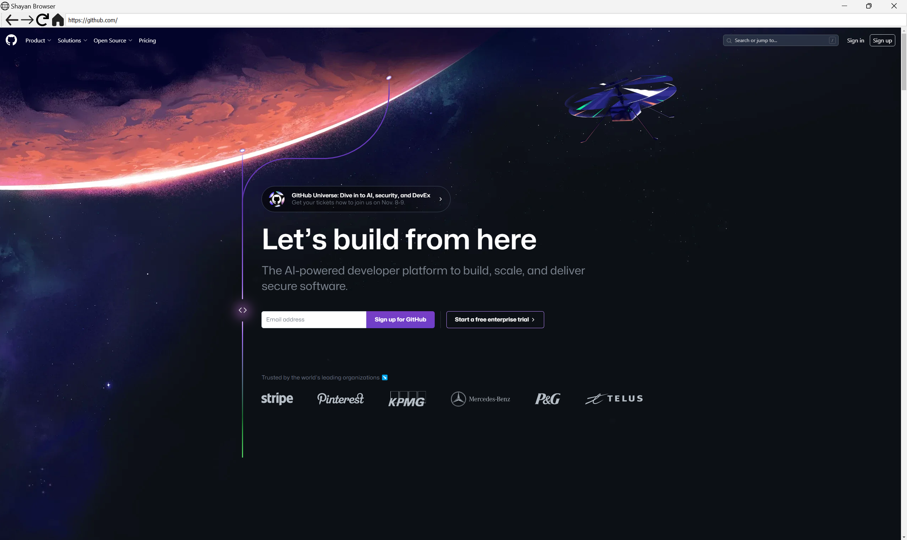
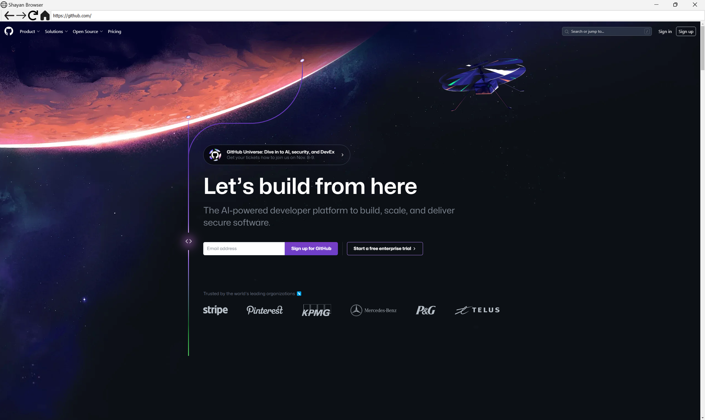
Site web Voyage en Nature
Projet Front-End : Développer un site web personnalisé en utilisant les langages HTML, CSS et JavaScript sur Visual Studio Code avec Live Server, dans le but de créer un site web interactif et esthétique pour promouvoir les activités en plein air.
- Appliquer des concepts du langage HTML5, Javascript, CSS.
- Mettre en pratique le développement de sites web interactifs.
- Créer de documentation structurée et facilement accessible avec Doxygen.

Matlab et Simulink
Matlab et Simulink: Utiliser à plusieurs reprises des outils Matlab et Simulink pour simuler le comportement des systèmes. Utiliser ces logiciels pour simuler des systèmes à rétroaction en boucle fermée, ainsi que pour simuler la réponse des systèmes en télécommunication et analyser les signaux.
- Effectuer des calculs matriciels en utilisant Matlab.
- Écrire des fichiers de fonctions et utiliser des fonctions de Matlab.
- Écrire et simuler des fonctions de transfert sur Simulink et Matlab.
- Créer des tableaux de simulations dans Simulink et des données de calcul dans Matlab.
- Générer des graphiques des simulations dans Simulink et des données de calcul dans Matlab.
Système de commande de puissance
Projet Intégrateur 1 : Concevoir un système de commande et de contrôle via le logiciel Logicim, utilisant des circuits logiques pour réguler la puissance des dispositifs électriques tout en garantissant une réception optimale de l'énergie.
- Planifier et rédiger un rapport technique d'ingénierie pour le projet.
- Collaborer au sein d'une équipe de 5 personnes pour concevoir et présenter le projet.
- Schématiser et concevoir un système de commande de puissance en respectant le budget.
- Élaborer des diagrammes schématiques d'un système électrique de contrôle de fréquence.
- Utiliser PSOC Creator pour visualiser les circuits logiques sur un microcontrôleur et un circuit électrique.

Système domotique de modulation des signaux numériques
Projet Intégrateur 2 : Concevoir un système domotique en utilisant des circuits Électroniques pour permettre la gestion de plusieurs appareils domestiques via un seul fil de communication.
- Participer à la vérification des calculs et respecter les contraintes du mandat.
- Utiliser des outils électriques tels que l’oscilloscope, multimètre et générateur de fonction DC/AC.
- Appliquer des connaissances en filtres analogiques, modulateur, démodulateur et spectre de fréquence.
- Effectuer des calculs sur des circuits électriques et électroniques analogiques et les vérifier sur LTSPICE.
- Collaborer au sein d'une équipe de trois personnes pour la conception et rédaction d'un rapport technique.
 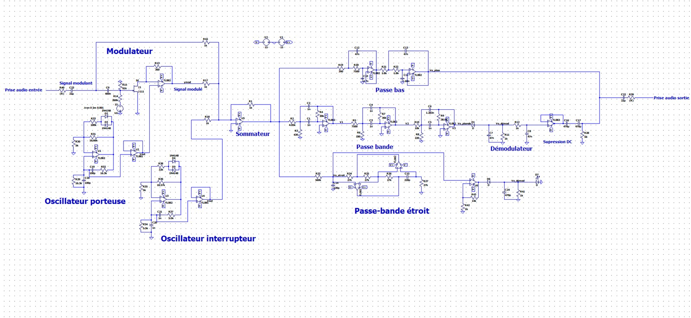
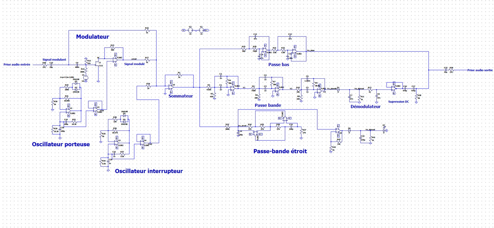
Autodesk AutoCAD Electrical
Conception Assistée par Ordinateur: Réaliser le dessin des circuits électriques et des circuits électroniques en utilisant AutoCAD, dans le but de schématiser des circuits.
- Utiliser des commandes de dessin et d'édition.
- Comprendre des paramètres de projet et de dessin.
- Réaliser la schématisation d'un circuit d’un moteur triphasé.
- Réaliser la schématisation d'un circuit d’un convertisseur alternatif/continu.
- Familiariser avec les symboles électriques, numéroter des fils et étiquer des composants.
 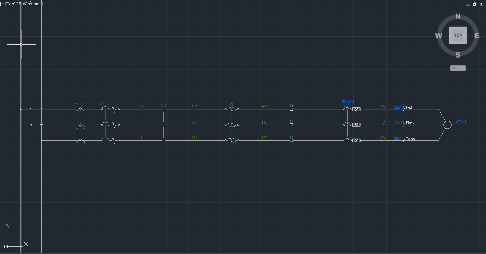
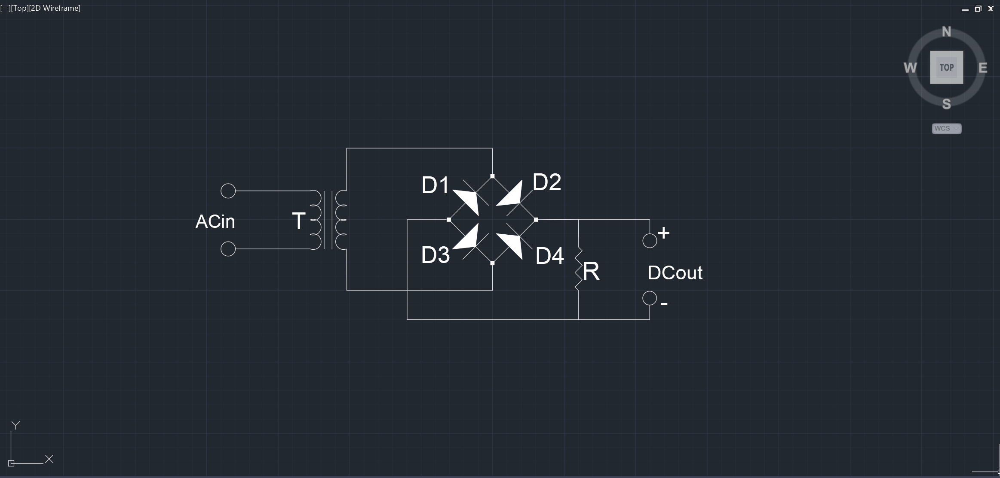
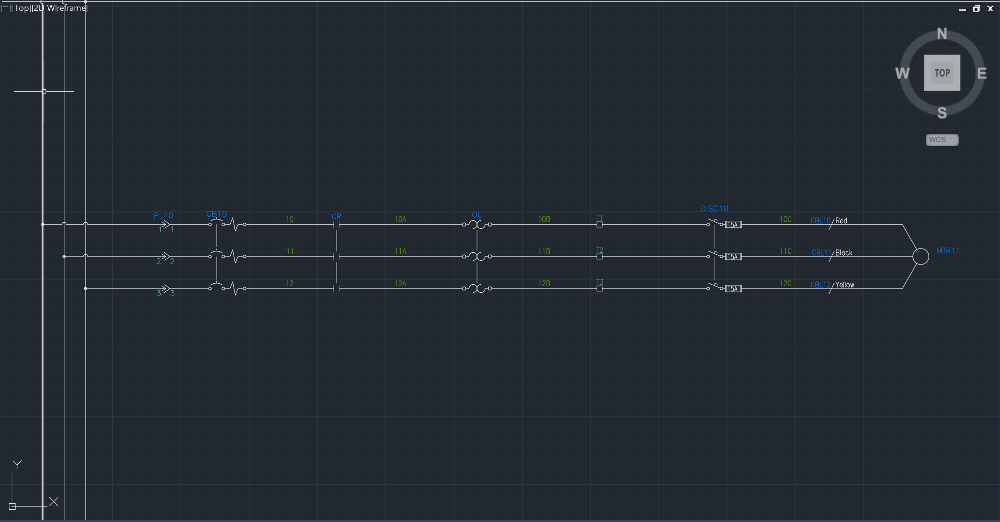
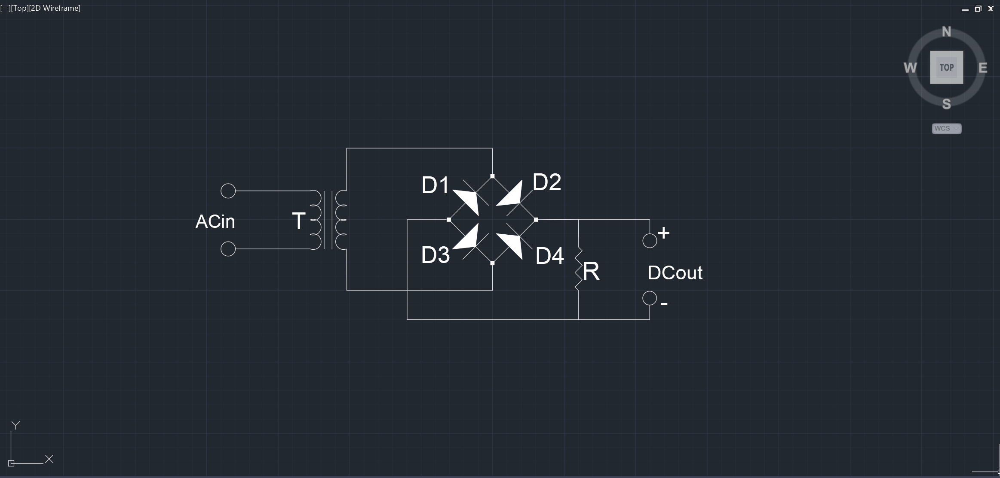
Électrotechnique
Énergie électrique: Vérifier les circuits, la distribution et la transmission d'Énergie Électrique en effectuant des calculs et de simulation de tension, courant, puissance pour des circuits monophasé et triphasés afin de s’assurer de bon fonctionnement des dispositifs électriques.
- Réaliser des calculs et effectuer la simulation sur le logiciel EMTP-RV.
- Calculer des puissances apparentes, facteur de puissance et condensateur de compensation.
- Utiliser les dispositifs tels que des transformateurs, des moteurs asynchrones triphasés (MAS).
- Prendre des mesures en pratique ou sur logiciel des circuits électriques et les documenter dans un rapport.
- Simuler de commande et régulation des systèmes de contrôle en boucle fermée tels que des PID sur Simulink.
Électricité du Bâtiment
Électricité: Appliquer le Code de Construction du Québec-Électricité 2018 pour réaliser des calculs électriques, acquérir des connaissances des principales composantes de distribution électrique, et démontrer un engagement envers la sécurité et l'environnement.
- Déterminer différentes méthodes et matériaux pour assurer une connexion de terre efficace.
- Effectuer l'inspection électrique d’un local de bâtiment conformément aux normes LSST et RSST.
- Vérifier le câblage des prises électriques standards et différentielles à l'aide d'un testeur de prise.
- Déterminer les normes relatives aux dégagements, aux chutes de tension et aux facteurs de correction.
- Déterminer les charges, les courants admissibles des conducteurs et les calibres appropriés selon le code.
Radio AM
Projet Électromagnétisme : Concevoir une radio AM en mettant en œuvre les concepts physiques de l'électricité et de l'électromagnétisme pour capter les stations AM de radio.
- Effectuer une démonstration et une présentation orale du projet.
- Réaliser des calculs et effectuer la conception de manière autonome.